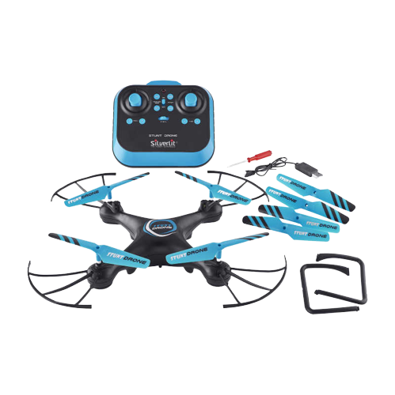
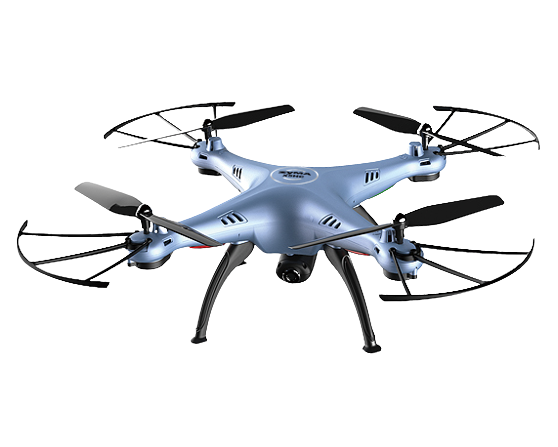
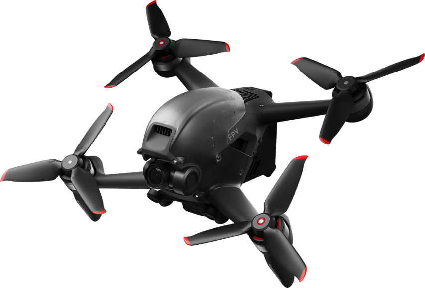

Hur svårt det är att hantera olika typer av drönare
Drönare kommer med alla möjliga olika färger, former, användningar, mjukvaror för att nämna några.
Men Det som gör att dem liknar varandra är deras svårighets hantering. Olika typer av drönare är
olika svå¨ra att flyga. Det går från så lätt att små bran kan flyga dem, till drönare som är avsedda
för professionella drönar förare. Dem man känner igen mest är dem som kommer från stora märken som
DJI. Men Det finns mycket svårare drönare att flyga och dem brukar för det mesta vara egen byggda.
.png)
Lätta drönare
Lätta drönare är drönare som är på gränsen av att bli klassade som leksaker. Dem är för det mesta
affärsköpta och har inte många funktioner. Den mest avancerade som dem kan ha är en knapp som ändrar
deras fart eller en knapp som gör en vålt. Det är sådana drönare som man brukar ge till personer som
bara ville ha lite kul, personer som vill börja förstå drönare och barn som ville ha en RC leksak.

Medelsvåra drönare
Medelsvåra drönare är där drönare börjar få mer avancerade funktioner. Det brukar inkludera längre
räckvidd, högre hastigheter och viktigast av allt, kameror. Medelsvåra drönare skiljer sig inte
mycket från lätta drönare ifall man jämför hanterings svårighet men funktionerna som dem får ger dem
mer en drönar klassifikation än leksak. Medelsvåra drönare kan också användas till jobb

Svåra drönare
Svåra drönare är gränsen där drönarna inte är för alla. Det är nu dem flesta börjar överskrida 70km/h
fart och nu får vissa MANUAL läge. Om man vill ha en svår hanterad drönare så är det rekommenderat
att först bli van vid medelsvåra drönare (om man inte vill krascha den alltså). Svåra drönare får
vissa nya egenskaper som gör det roligare och mer spännande att flyga drönare.

MANUAL
Manual stryda drönare är det svåraste läget man kan ha en drönare i. Alla aspekt av drönaren är
styrda mycket exaktare än vanligt och dessutom så finns det inga säkerhets åtgärder. Till exempel,
ifall du lutar fram en DJI FPV drönare i N läge eller S läge och sen släpper stickan så kommer den
självstabiliseras. Men ifall samma sak hade hänt med en drönare i manual så hade drönare inte
självstabilisrats, utan hade istället bara fortsatt vara lutad på det sättet. Att börja flyga manual
är ingen lätt grej man bara kan börja med direkt. Man måste jobba sig igenom åtminstånde medel och
svår och bli van vid FPV drönare. Men när man väl kan flyga i manual så är det då du låser upp alla
möjligheter med din drönare. Eftersom du har full kontroll så kan du göra tricks och flyga på sätt
som du inte varit tillåten att göra innan just då.